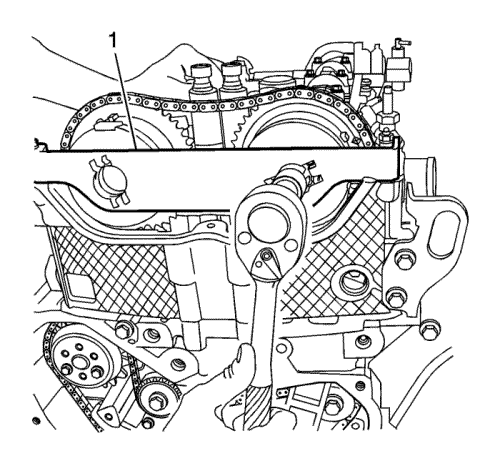
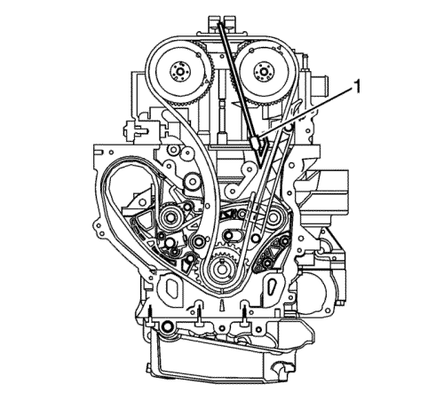
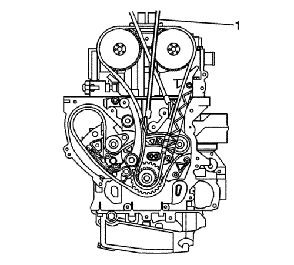

Sustitución del actuador de posición del árbol de levas de admisión
Herramientas especiales
| • | EN-45059 Medidor de ángulos |
| • | EN-48749 Juego de herramientas de retención de la cadena de distribución |
| • | EN-48953 Herramienta de bloqueo de actuadores de árbol de levas |
Si desea informarse sobre herramientas regionales equivalentes, consultar Herramientas especiales .
Procedimiento de desmontaje
- Desmontar la tapa del árbol de levas. Consultar Sustitución de la tapa de los árboles de levas .
- Retire las bujías. Consultar Sustitución de la bujía .

- Gire el cigüeñal en sentido de las agujas del reloj y monte la herramienta de retención EN-48953 (1).
Precaución: Consulte Precaución con las fijaciones en la sección Prólogo
- Monte los tornillos de retención del actuador del árbol de levas y apriételos a 10 N·m (89 lib. pulg.) .
- Afloje, pero NO QUITE el tornillo actuador del árbol de levas de admisión.
- Desmonte la herramienta de bloqueo EN-48953 (1).
- Limpie la cadena de distribución y los engranajes con disolvente.
Nota: Asegúrese de que la cadena de distribución y los actuadores de posición del árbol de levas están marcados para un montaje correcto.
- Marque los actuadores de los árboles de levas de admisión y de escape y sus respectivos emplazamientos, en la cadena de distribución.

- Quite los tornillos de la guía superior de la cadena de distribución y la guía.

- Desmonte el tensor de la cadena de distribución.

Nota:
| • | Durante la retirada o la instalación, el actuador del árbol del levas de admisión no deberá girar. |
| • | Asegúrese de que las puntas de la herramienta estén totalmente engranadas en la cadena de distribución. Se puede utilizar la varilla de unión de la herramienta de retención en la parte trasera de la cadena, para asegurar el engranaje de sus dientes. |
- Monte la herramienta de retención EN-48749 (1) en la parte de admisión de la cadena de distribución.

- Monte la herramienta de retención EN-48749 (1) en la parte de escape de la cadena de distribución.

- Retire y deseche el tornillo actuador (1) del árbol de levas de admisión.
- Gire ligeramente el árbol de levas de escape en sentido de las agujas del reloj, para eliminar la tensión de la cadena de distribución en el actuador de admisión.
- Retire el actuador del árbol de levas de admisión (3) del árbol de levas, quitándolo al mismo tiempo de la cadena de distribución.
Procedimiento de montaje
Nota: Asegúrese de que la marca de alineación realizada previamente en el actuador del árbol de levas de admisión sigue estando alineada adecuadamente con la marca de la cadena de distribución.
- Monte la cadena de distribución en el actuador del árbol de levas de admisión.
- Haga coincidir la marca de alineación del actuador del árbol de levas de admisión realizada previamente con la marca de la cadena de distribución y monte del actuador en el árbol de levas girando el árbol de levas de escape en sentido de las agujas del reloj, si fuera necesario.
- Instale un NUEVO tornillo actuador del árbol de levas de admisión (1) hasta que quede ajustado.
- Retire la herramienta de retención del lado de admisión de la cadena de distribución (1).
Nota: Asegúrese de que la marca de alineación realizada previamente en el actuador del árbol de levas de admisión sigue estando alineada adecuadamente con la cadena de distribución. Si la marca realizada previamente en el actuador del árbol de la base admisión no estuviese correctamente alineada, consulte Sustitución de la cadena de la distribución del árbol de levas, el piñón de cadena y el tensor .
- Retire la herramienta de retención del lado de escape de la cadena de distribución (1).
Nota: Si no se ajusta adecuadamente el dispositivo tensor, éste podría sobre extenderse, limitando la vida útil de la cadena de distribución.
- Reajuste y monte el dispositivo tensor de la cadena de distribución. Consultar Sustitución del tensor de cadena de distribución .
- Monte la herramienta de retención EN-48953 (1).
- Monte los tornillos de retención del actuador del árbol de levas y apriételos a 10 N·m (89 lib. pulg.) .
- Apriete el tornillo del actuador del NUEVO árbol de levas hasta 30 N·m (22 lib. pie) más 100 grados adicionales utilizando el medidor EN-45059.
Nota: Para realizar este proceso, deberá estar instalada la herramienta de retención EN-48953.
- Para desbloquear el dispositivo tensor aplique un par de apriete rotatorio en sentido contrario a las agujas del reloj, en el tornillo del cigüeñal compensador de 45 N·m (33 lib pie).
- Retire la herramienta de retención EN-48953 (1).
- Monte la guía superior de la cadena de distribución con sus tornillos y apriete hasta 10 N·m (89 lib. pulg.).
- Monte las bujías. Consultar Sustitución de la bujía .
- Monte la tapa del árbol de levas. Consultar Sustitución de la tapa de los árboles de levas .
| © Copyright Chevrolet Europe. All rights reserved |